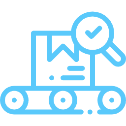

宮璇在 AI 產業解決方案方面，專注於提供智慧化、數據驅動的創新方案，透過人工智慧技術，優化傳統製造業的生產流程，提升產能與產品良率。
Service
AI優化生產線

關鍵技術模組
數位孿生工廠
透過物聯網（IoT）感測器收集實時數據，建立虛擬的生產線模型，以此模擬和預測設備狀態，實現預防性維護。
動態排產演算法
根據訂單急迫性、能源消耗以及設備負載等多重因素，智慧化生成最優化的生產計畫，提升產能運用效率。

AI 品質檢測
運用電腦視覺技術，對產品外觀進行自動化檢測。大幅減少對人工檢驗的需求，提升檢測的精準度與效率。
應用案例

化工製造業
在精密化學與合成材料領域，我們協助企業導入演算法模型，分析生產數據與實驗條件，自動優化合成參數（如溫度、壓力、反應時間），藉此提升產品反應效率與良率，並降低因人工調整造成的不穩定風險。
紡織業
針對染整與印花製程，我們提供可預測染劑濃度偏差的模型，協助企業即時調整染料配比。該模型基於歷史批次資料進行學習，並導入於生產現場的品控節點中，有效降低布料染色不均與顏色誤差的發生率。